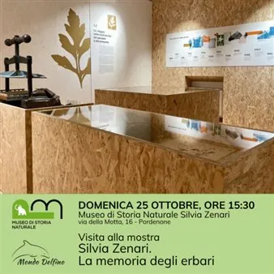

dom 25 ott · dalle 15:30
Visita alla mostra "Silvia Zenari. La memoria degli erbari"
Una visita guidata alla mostra per conoscere o riscoprire a 70 anni dalla morte Silvia Zenari, naturalista a cui è intitolato il Museo di Storia Naturale di Pordenone. Grazie a una selezione di fogli d’erbario, libri, documenti e immagini del tempo, il percorso racconta la…
 Indicazioni
Indicazioni
- Costi e prenotazioni
- Costo non indicato · Prenotazione non indicata
- Programma
- Programma da verificare. Apri la fonte ufficiale per orari e possibili aggiornamenti.
- In caso di maltempo
- Nessuna indicazione specifica pubblicata.
- Note
- Acquisito automaticamente dalla fonte.
L’EVENTO
Descrizione completa
Una visita guidata alla mostra per conoscere o riscoprire a 70 anni dalla morte Silvia Zenari, naturalista a cui è intitolato il Museo di Storia Naturale di Pordenone. Grazie a una selezione di fogli d’erbario, libri, documenti e immagini del tempo, il percorso racconta la storia e gli studi di questa appassionata botanica, tra le poche attive nelle istituzioni scientifiche italiane di metà Novecento, evidenziando il suo stretto legame con il territorio friulano. Allo stesso tempo attraverso gli studi e i contributi di Silvia Zenari sarà possibile riscoprire la storia del Novecento, nel “suo” Friuli e nello studio delle piante attraverso gli erbari.
La PRENOTAZIONE è CONSIGLIATA entro il venerdì precedente la data dell’attività.
Tutte le attività sono comprese nel costo del biglietto di ingresso, non è previsto un costo aggiuntivo per la partecipazione alle visite guidate o ai laboratori. Per informazioni circa il costo del biglietto di ingresso al museo visita il SITO • Durata: 1 ora
• Target: visitatori singoli e/o famiglie
• Numero massimo partecipanti: 25
Informazioni e prenotazioni: 380 4614951 / prenotazionimusei@comune.pordenone.it (dal lunedì al venerdì dalle 9 alle 12 e il martedì anche dalle 14 alle 17)
IL PROGRAMMA
Programma e orari
Appuntamenti raccolti dalle fonti elencate. Dove manca un orario, non è ancora disponibile in questa scheda.
Programma pubblicato
- Dal 2026-10-25 al 2026-10-25
INFORMAZIONI UTILI
Prima di partire
- Controllare la fonte prima di partire.
ORGANIZZAZIONE